The Zoo: a menu of convex variational problems
MultiGridBarrier.Zoo packages six classical convex variational problems as one-line constructors that return an MGBProblem. The typical usage is
mg = amg(fem2d_P1())
problem = Zoo.minimal_surface(mg)
sol = mgb_solve(problem)
plot(sol)Each problem ships with dimension-agnostic defaults; the same constructor works for a 1D, 2D, or 3D mesh. Below: one solve per problem at each dimension, on the coarsest mesh that still draws an interesting picture. Tolerances are loose (tol = 1e-3) and progress bars are suppressed.
using MultiGridBarrier, PyPlot # PyPlot enables the plotting extension
nodes1 = collect(range(-1.0, 1.0, length=17)) # 1D
mg1 = amg(fem1d(; nodes=nodes1))
mg2 = amg(subdivide(fem2d_P1(), 3)) # 2D
mg3 = amg(subdivide(fem3d(; k=1), 3)) # 3D — L=3 to resolve active sets1. Elasto-plastic torsion (Hencky)
\[\min \int \tfrac{1}{2}|\nabla u|^2 + f u \, dx \quad \text{s.t.}\quad |\nabla u| \leq \texttt{smax}.\]
A twisted prismatic bar in the elastic-perfectly-plastic regime; the constraint is the von Mises yield bound on the stress potential.
1D
sol = mgb_solve(Zoo.elastoplastic_torsion(mg1); verbose=false, tol=1e-3)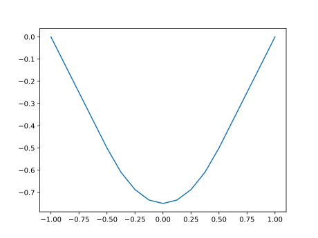
2D
sol = mgb_solve(Zoo.elastoplastic_torsion(mg2); verbose=false, tol=1e-3)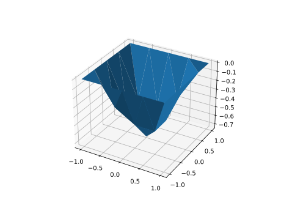
3D
sol = mgb_solve(Zoo.elastoplastic_torsion(mg3); verbose=false, tol=1e-3)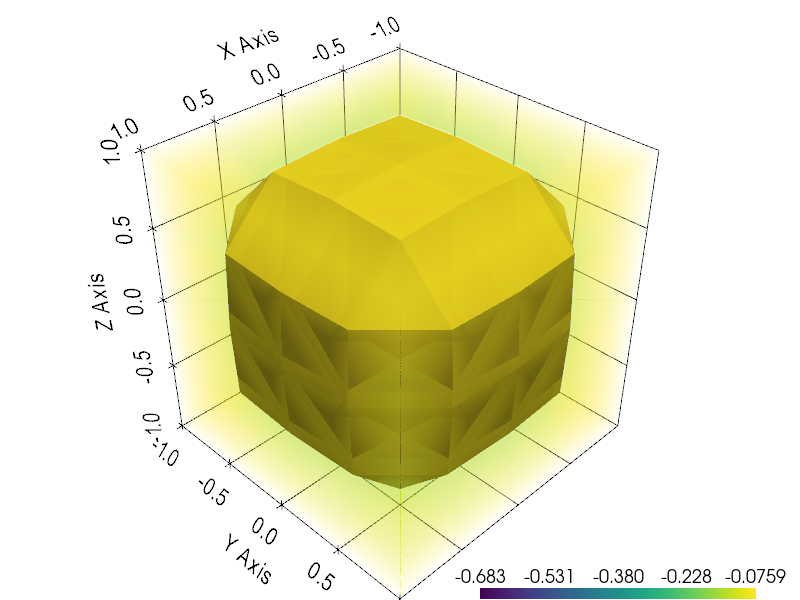
2. Minimal surface (graph form)
\[\min \int \sqrt{1 + |\nabla u|^2}\, dx\]
with prescribed Dirichlet boundary trace. Plateau / Bernstein problem. The dim-aware default g_u gives a non-trivial trace so the picture isn't $u \equiv 0$.
1D
sol = mgb_solve(Zoo.minimal_surface(mg1); verbose=false, tol=1e-3)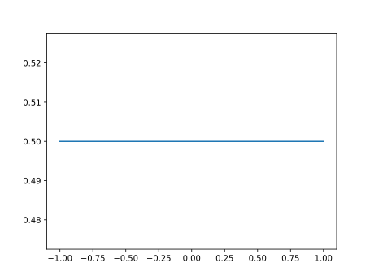
2D
sol = mgb_solve(Zoo.minimal_surface(mg2); verbose=false, tol=1e-3)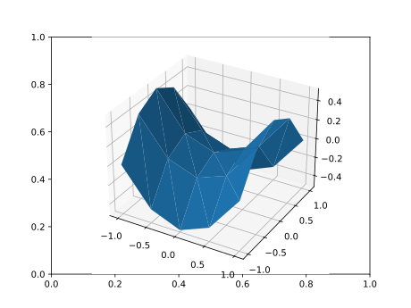
3D
sol = mgb_solve(Zoo.minimal_surface(mg3); verbose=false, tol=1e-3)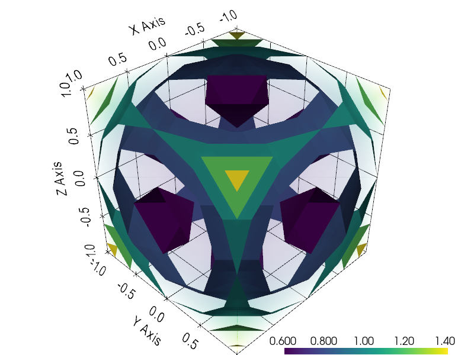
3. p-harmonic maps (vectorial p-Laplacian)
\[\min \int |\nabla u|_F^p + f \cdot u \, dx,\qquad u:\Omega \to \mathbb{R}^d.\]
The full-gradient (Frobenius) p-energy. Plots show $\|u(x)\|$, a scalar field.
1D
In 1D, $u$ is scalar and this reduces to standard scalar $p$-Laplace.
sol = mgb_solve(Zoo.p_harmonic(mg1); verbose=false, tol=1e-3)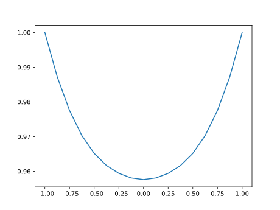
2D
sol = mgb_solve(Zoo.p_harmonic(mg2); verbose=false, tol=1e-3)
u_norm = sqrt.(sol.z[:,1].^2 .+ sol.z[:,2].^2)3D
sol = mgb_solve(Zoo.p_harmonic(mg3); verbose=false, tol=1e-3)
u_norm = sqrt.(sol.z[:,1].^2 .+ sol.z[:,2].^2 .+ sol.z[:,3].^2)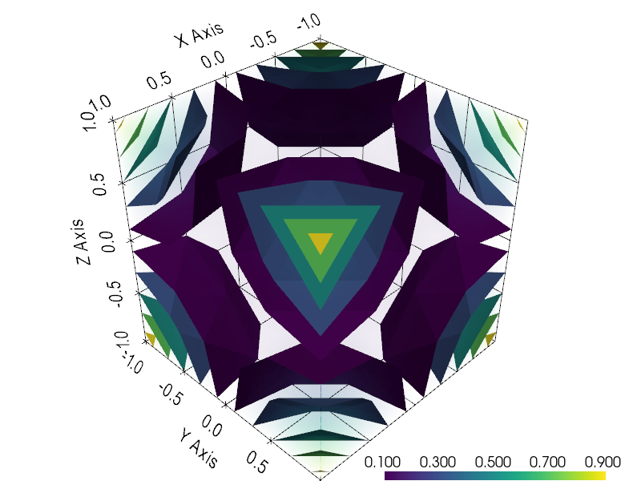
4. Norton–Hoff power-law elasticity
\[\min \int |\varepsilon(u)|_F^p + f \cdot u \, dx, \qquad \varepsilon(u) = \tfrac{1}{2}(\nabla u + \nabla u^T).\]
Symmetric-gradient power-law (the physically correct model: linear elasticity at $p=2$, Norton–Hoff creep for $1 \leq p < 2$). Plots show $\|u(x)\|$.
1D
Not defined in 1D — symmetric gradient reduces to scalar gradient. Use scalar $p$-Poisson or Zoo.elastoplastic_torsion instead.
2D
sol = mgb_solve(Zoo.norton_hoff(mg2); verbose=false, tol=1e-3)
u_norm = sqrt.(sol.z[:,1].^2 .+ sol.z[:,2].^2)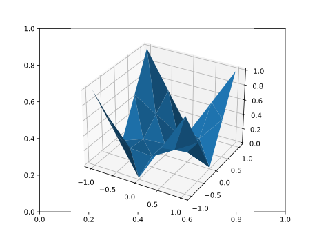
3D
sol = mgb_solve(Zoo.norton_hoff(mg3); verbose=false, tol=1e-3)
u_norm = sqrt.(sol.z[:,1].^2 .+ sol.z[:,2].^2 .+ sol.z[:,3].^2)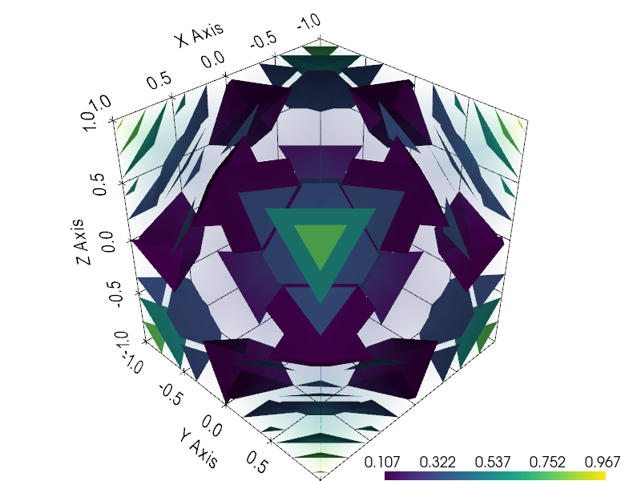
5. ROF total-variation denoising
\[\min_u \int |\nabla u| + \tfrac{\lambda}{2}(u - f_{\mathrm{data}})^2 \, dx.\]
Rudin–Osher–Fatemi 1992 — the foundational variational model for edge-preserving image denoising. We feed a step-like f_data so the denoised u is non-trivial.
1D
sol = mgb_solve(Zoo.rof(mg1); verbose=false, tol=1e-3)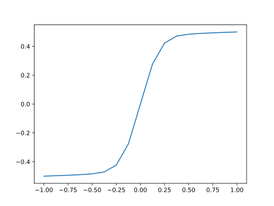
2D
sol = mgb_solve(Zoo.rof(mg2); verbose=false, tol=1e-3)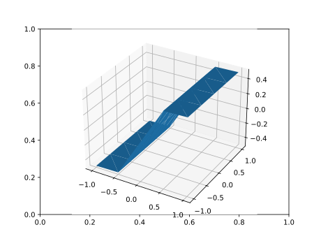
3D
sol = mgb_solve(Zoo.rof(mg3); verbose=false, tol=1e-3)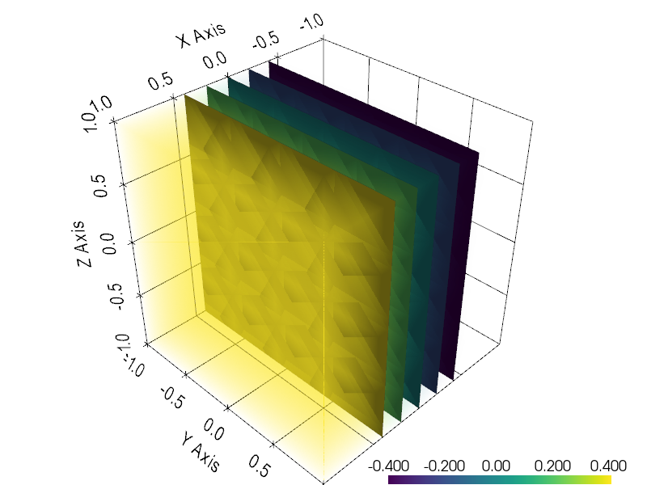
6. Two-sided obstacle
\[\min \int \tfrac{1}{2}|\nabla u|^2 + f u \, dx \quad \text{s.t.}\quad \psi_{\mathrm{lower}}(x) \leq u(x) \leq \psi_{\mathrm{upper}}(x).\]
Membrane pinched between an upper and a lower obstacle.
1D
sol = mgb_solve(Zoo.two_sided_obstacle(mg1); verbose=false, tol=1e-3)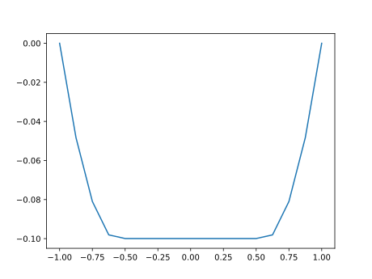
2D
sol = mgb_solve(Zoo.two_sided_obstacle(mg2); verbose=false, tol=1e-3)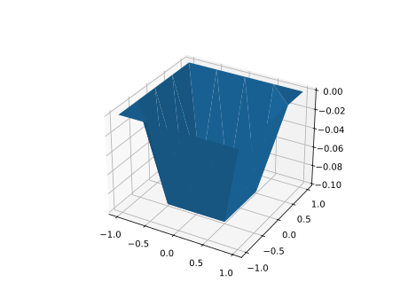
3D
sol = mgb_solve(Zoo.two_sided_obstacle(mg3); verbose=false, tol=1e-3)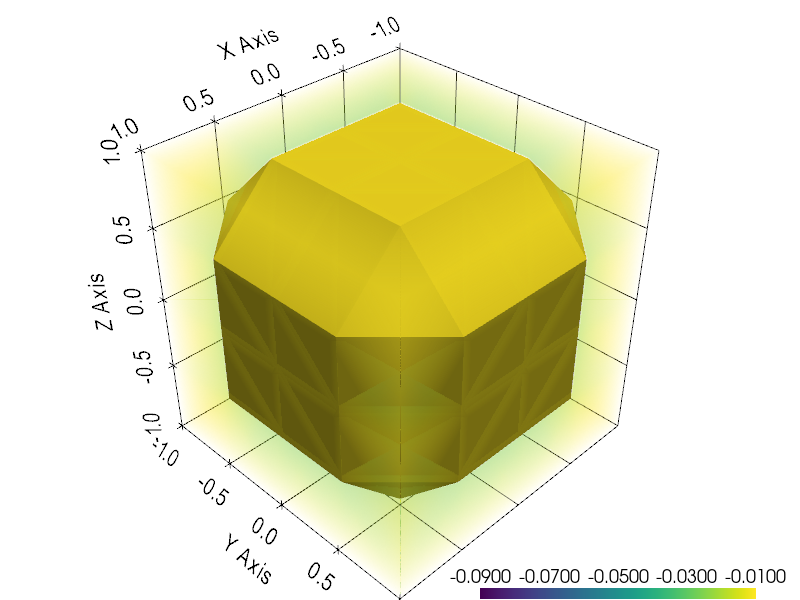
Zoo module reference
MultiGridBarrier.Zoo — Module
ZooA library of convex variational test problems. Each constructor takes a MultiGrid and returns an assembled, closure-free MGBProblem; solve it with mgb_solve(problem; kwargs...). Problem-defining parameters (p, forcing f, boundary data g_u, …) are keyword arguments of the constructor; solver-control parameters (tol, device, …) are passed to mgb_solve.
GPU support
Solve on a GPU by loading the CUDA extension (using CUDA, CUDSS_jll) and passing device = CUDADevice to mgb_solve, e.g. mgb_solve(Zoo.p_harmonic(mg); device = CUDADevice). The problem is assembled on the CPU and moved to the device (and the solution back) by mgb_solve.
MultiGridBarrier.Zoo.elastoplastic_torsion — Method
elastoplastic_torsion(mg; f, g_u, smax, s_init) -> MGBProblemHencky elasto-plastic torsion of a prismatic bar. State $z = (u, s)$, problem
\[\min \int \tfrac{1}{2}|\nabla u|^2 + f u \, dx \quad \text{s.t.}\quad |\nabla u| \leq \texttt{smax}\;\;\text{a.e.}\]
encoded as $s \geq |\nabla u|^2$ (slack inequality) and $s \leq \texttt{smax}^2$ (linear constraint). At the optimum $s = |\nabla u|^2$, so $\tfrac{1}{2}\int s$ in the objective recovers the elastic energy $\tfrac{1}{2}\int|\nabla u|^2$.
Returns an MGBProblem; solve with mgb_solve(problem; kwargs...).
Keyword arguments
f::Function: scalar linear forcing. The dim-dependent default (f = 2in 1D,4in 2D,16in 3D) is chosen so that the elastic solution's $\max|\nabla u|$ overshootssmaxby roughly $2\times$, which places the plastic free boundary well inside the domain — the active set ($|\nabla u| = s_{\max}$) covers $\approx 25$–$75\%$ of $\Omega$, showing the elastic / plastic transition clearly.g_u::Function = x -> 0: scalar Dirichlet boundary lift foru.smax::Real = 1: yield bound on|∇u|.s_init::Real = smax^2/2: feasible initial slack (must lie in(0, smax^2)).
MultiGridBarrier.Zoo.minimal_surface — Method
minimal_surface(mg; g_u, s_init) -> MGBProblemMinimal-surface (Plateau) problem in graph form. State $z = (u, s)$, problem
\[\min \int \sqrt{1 + |\nabla u|^2}\, dx\]
with prescribed Dirichlet boundary trace g_u. The integrand is encoded as $s \geq \sqrt{1 + |\nabla u|^2}$ via the Euclidean-power barrier with a non-trivial affine A, b: the augmented vector $Ay + b$ packs (∇u, 1, 0, s) so the slack inequality $s^2 \geq |\nabla u|^2 + 1$ is the shifted Lorentz cone.
Keyword arguments
g_u::Function: Dirichlet boundary lift. The dim-aware default produces a non-trivial picture: $x \mapsto \tfrac{1}{2} x_1^2$ in 1D, $x \mapsto \tfrac{1}{2}(x_1^2 - x_2^2)$ (saddle) in 2D, and $x \mapsto \tfrac{1}{2}\|x\|^2$ in 3D.s_init::Real = 10: feasible initial slack (need $s^2 > |\nabla u_0|^2 + 1$).
MultiGridBarrier.Zoo.norton_hoff — Method
norton_hoff(mg; p, f, g_u, s_init) -> MGBProblemNorton–Hoff power-law (visco-)elasticity for a vector displacement $u : \Omega \subset \mathbb{R}^d \to \mathbb{R}^d$:
\[\min \int |\varepsilon(u)|_F^p + f \cdot u \, dx, \qquad \varepsilon(u) = \tfrac{1}{2}(\nabla u + \nabla u^T).\]
The symmetric gradient $\varepsilon$ kills rigid rotations, so this is the physically-correct power-law model: linear elasticity at $p=2$, Norton–Hoff creep / glacier ice / non-Newtonian power-law flow for $1 \leq p < 2$.
State $z = (u_1, \ldots, u_d, s)$ with slack $s \geq |\varepsilon(u)|_F^p$.
Implemented in 2D ($d=2$) and 3D ($d=3$); 1D throws an error (in 1D the symmetric gradient reduces to the scalar gradient, so use scalar p-Poisson or elastoplastic_torsion).
Keyword arguments
p::Real = 1.5: power-law exponent. Default 1.5 puts us in the non-Newtonian / Norton–Hoff creep regime ($1 \leq p < 2$);p = 2collapses to linear elasticity and is the least interesting case.f::Function = x -> ntuple(_->T(0.5), d): vector linear forcing.g_u::Function: Dirichlet boundary lift. The dim-aware default is a saddle-shaped trace on the first component ((x_1 x_2, 0)in 2D,(x_1 x_2 x_3, 0, 0)in 3D) — non-affine, so the interior deforms in response without needing strong forcing.s_init::Real = 100: feasible initial slack.
MultiGridBarrier.Zoo.p_harmonic — Method
p_harmonic(mg; p, f, g_u, s_init) -> MGBProblemThe p-energy for vector-valued maps (the "vectorial p-Laplacian"),
\[\min \int |\nabla u|_F^p + f \cdot u \, dx \qquad u : \Omega \to \mathbb{R}^d,\]
where $|\nabla u|_F^2 = \sum_{i,j} (\partial u_i / \partial x_j)^2$ is the Frobenius norm of the gradient matrix. Minimisers are p-harmonic maps (in the flat-target case). Note: this is not elasticity — Frobenius of the full gradient penalises rigid rotations. For Norton–Hoff power-law elasticity, see norton_hoff.
State $z = (u_1, \ldots, u_d, s)$ with slack $s \geq |\nabla u|_F^p$.
Keyword arguments
p::Real = 1.5: power-law exponent. Default 1.5 is in the genuinely non-quadratic regime (p = 2collapses to a decoupled system of scalar Laplacians and is the least interesting case).f::Function = x -> ntuple(_->T(0.5), d): vector linear forcing.g_u::Function: Dirichlet boundary lift. The dim-aware default is a saddle-shaped trace on the first component, zero on the others ((x_1^2,)in 1D,(x_1 x_2, 0)in 2D,(x_1 x_2 x_3, 0, 0)in 3D), which is non-affine and drives the interior away from zero without needing strong forcing.s_init::Real = 100: feasible initial slack.
MultiGridBarrier.Zoo.rof — Method
rof(mg; f_data, λ, g_u, s_init, r_init) -> MGBProblemRudin–Osher–Fatemi total-variation denoising of a scalar field f_data:
\[\min_u \int |\nabla u| + \tfrac{\lambda}{2} (u - f_{\mathrm{data}})^2 \, dx,\]
encoded with state $z = (u, s, r)$ where $s \geq |\nabla u|$ is the TV slack and $r \geq (u - f_{\mathrm{data}})^2$ is the data-fitting slack. The linear objective becomes $\int (s + \tfrac{\lambda}{2} r) \, dx$.
Keyword arguments
f_data::Function: scalar noisy input. Default is a smoothed-step signal $0.5 \tanh(5 x_1)$ along the first coordinate.λ::Real = 1: fidelity weight.g_u::Function: Dirichlet boundary lift foru. Defaults tof_dataso the boundary trace matches the data — otherwise the zero Dirichlet BC fights the data near $\partial \Omega$ and dragsuto zero.s_init::Real = 10,r_init::Real = 10: feasible initial slacks.
MultiGridBarrier.Zoo.two_sided_obstacle — Method
two_sided_obstacle(mg; f, g_u, ψ_lower, ψ_upper, s_init) -> MGBProblemMembrane between an upper and a lower obstacle:
\[\min \int \tfrac{1}{2}|\nabla u|^2 + f u \, dx \quad \text{s.t.}\quad \psi_{\mathrm{lower}}(x) \leq u(x) \leq \psi_{\mathrm{upper}}(x).\]
Encoded with state $z = (u, s)$, slack $s \geq |\nabla u|^2$, and two linear barriers $u - \psi_{\mathrm{lower}} > 0$, $\psi_{\mathrm{upper}} - u > 0$.
Keyword arguments
f::Function: scalar linear forcing. The dim-dependent default (f = 1in 1D,2in 2D,8in 3D) drives the elastic solution past the default lower obstacleψ_lower = -0.1, so the active set covers $\approx 25$–$75\%$ of $\Omega$.g_u::Function = x -> 0: Dirichlet lift; must lie strictly inside the obstacles.ψ_lower::Function = x -> -0.1,ψ_upper::Function = x -> 1: obstacles. Default values place the lower obstacle close enough to zero that the default forcing reaches it; the upper obstacle is loose by default.s_init::Real = 10: feasible initial slack.